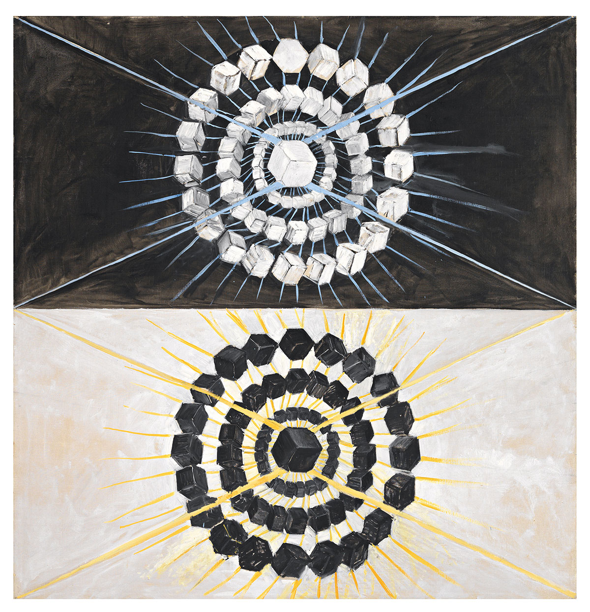

Απαγωγή σε Άτοπο #not#

Ο πίνακας Ο κύκνος, Νο. 8 της Hilma af Klint.#
Φτάνουμε στην Αʹ Λυκείου - Γενικού είτε ΕΠΑΛ, δεν έχει τόση σημασία - και μέσα στα όσα λέμε για αποδείξεις συνήθως βρίσκεται και μία αγαπημένη απόδειξη περί της αρρητότητας της τετραγωνικής ρίζας του 2. Χρόνια τώρα - εντάξει, όχι και πολλά - μία ερώτηση στριφογυρίζει στο μυαλό μου:
Γιατί τη διδάσκουμε αυτήν την απόδειξη;
Σαφώς, η παραπάνω απόδειξη επιτελεί δύο στόχους στην πορεία της διδακτές ύλης:
αφενός, αποδεικνύουμε ότι υπάρχουν πράγματι άρρητοι αριθμοί και ότι δεν τους βγάλαμε από το καπέλο - έστω και στο χαλαρό πλαίσιο του σχολείου,
αφετέρου, είναι μία απόδειξη που εισάγει τα παιδιά στην αποδεικτική τεχνική της απαγωγής με άτοπο.
Η συνήθης απόδειξη#
Πριν πιάσουμε την κουβέντα για την απόδειξη, ας θυμηθούμε στα γρήγορα την ίδια την απόδειξη - όπως συνήθως παρουσιάζεται στην τάξη και στα σχολικά βιβλία.
Έστω, προς άτοπο, ότι ο \(\sqrt{2}\) είναι ρητός και έστω, για την ακρίβεια, ότι \(m,n\) είναι δύο φυσικοί αριθμοί έτσι ώστε:
Υποθέτουμε, επιπλέον, ότι το κλάσμα είναι ανάγωγο, δηλαδή ότι ο μέγιστος κοινός διαιρέτης του \(m\) και του \(n\) είναι 1. Τώρα, δεδομένου ότι \(\sqrt{2}^2=2\) έπεται ότι:
Επομένως, ο \(m^2\) είναι άρτιος, άρα το ίδιο είναι και ο \(m,\) αφού το τετράγωνο ενός περιττού είναι περιττός - και άρα ο \(m\) δεν μπορεί να είναι περιττός. Επομένως, ο \(m\) γράφεται \(m=2k\) για κάποιον φυσικό αριθμό \(k\) και άρα, αντικαθιστώντας παραπάνω, παίρνουμε ότι:
Άρα και ο \(n^2\) είναι άρτιος, άρα το ίδιο είναι και ο \(n.\) Συνεπώς, οι \(m,n\) έχουν κοινό διαιρέτη το 2 - αφού είναι κι οι δύο άρτιοι - άτοπο, καθώς έχουμε υποθέσει ότι έχουν μέγιστο κοινό διαιρέτη 1. Επομένως, ο \(\sqrt{2}\) δεν μπορεί να γραφτεί σαν πηλίκο ακεραίων, άρα δεν είναι ρητός.
Τα προβλήματα…#
Η παραπάνω απόδειξη είναι μικρή και απλή, ειδικά, αν αναλογιστούμε το πόσες αποδείξεις υπάρχουν στα μαθηματικά και το πόσο δύσκολες μπορεί να είναι. Τόσο μικρή και τόσο απλή που μπορούμε να βρούμε παραλλαγές της ακόμα και σε πολύ παλιά κείμενα μαθηματικών. Ωστόσο, την παραπάνω απόδειξη δεν την παρουσιάζουμε σε ένα μαθηματικό κοινό αλλά σε παιδιά που μόλις έχουν ξεκινήσει να φοιτούν στα ελληνικά λύκεια. Συνακόλουθα, τα μαθηματικά που αναμένουμε να έχουν δει είναι, ως επί το πλείστον, αυτά του Γυμνασίου.
Έχοντας αυτό κατά νου, αρχίζουν να φανερώνονται αρκετά μελανά σημεία στην παραπάνω απόδειξη. Για αρχή, οι περισσότερες αποδείξεις που έχουν δει οι μαθητές του Γυμνασίου είναι της μορφής «αποδείξτε ότι ισχύει η παρακάτω ισότητα». Σε τέτοιες αποδείξεις, αυτό που καλούνται να κάνουν τα παιδιά είναι να εφαρμόσουν διάφορα αλγεβρικά (κυρίως) τεχνάσματα και είτε ξεκινώντας από το ένα μέλος της ισότητας, να καταλήξουν στο άλλο είτε ξεκινώντας από την ίδια την ισότητα να προχωρήσουν με ισοδυναμίες και να φτάσουν σε κάτι που ισχύει - το δεύτερο, βέβαια, αναφέρεται κυρίως σε αποδείξεις του Λυκείου και όχι τόσο του Γυμνασίου.
Επομένως, το να περάσει κανείς από αμιγώς αλγεβρικές και «τεχνικές» αποδείξεις σε μία απόδειξη που παρουσιάζει μία πληθώρα ιδεών είναι από μόνο του προβληματικό, ειδικά δε όταν με αυτήν την απόδειξη αποσκοπεί κανείς να εισαγάγει τα παιδιά σε μία νέα αποδεικτική τεχνική. Μαζί με όλα αυτά, ας βάλουμε και το εξής παράδοξο: τη θεωρία αριθμών. Η παραπάνω απόδειξη κάνει πάρα πολλές επικλήσεις σε απλά αποτελέσματα της θεωρίας αριθμών - πολύ απλά, ίσως. Ωστόσο, σε ποιο σημείο της πορείας τους τα παιδιά έχουν εκτεθεί συστηματικά κι εκτεταμένα στη θεωρία αριθμών;
Σε κανένα. Σε κανένα απολύτως σημείο δε συζητούνται τόσο συστηματικά οι ιδιότητες της διαιρετότητας. Πολλά, μικρά, απλά και διαισθητικά αποτελέσματα που αφορούν τη διαιρετότητα και τους ακέραιους αριθμούς απλώς δεν αναφέρονται σε κανένα σημείο της σχολικής ύλης. Γιατί, λοιπόν, σε μία απόδειξη που ήδη έχει προβληματικό ρόλο στη διδασκαλία των μαθηματικών στο Λύκειο, να έρθουμε να προσθέσουμε κι αυτό; Σαφώς και δεν έχουμε κανέναν λόγο να το κάνουμε, ακριβώς επειδή η τεχνική και η φιλοσοφία αυτής της απόδειξης είναι ασύνδετη με τα όσα έχουν δει τα παιδιά νωρίτερα στο σχολείο.
Για να ξεκαθαρίσουμε κάτι, το ότι η απόδειξη η ίδια είναι ξένη προς τα όσα έχουν δει τα παιδιά από μόνο του δεν είναι αυτό που την καθιστά προβληματική - γιατί, κάθε τι νέο, είναι σε έναν βαθμό ξένο. Αυτό που την καθιστά προβληματική είναι το γεγονός ότι είναι τόσο ξένη που δεν μπορεί να τα βοηθήσει να δουν καθαρά τις δύο ιδέες που μας απασχολούν, οι οποίες, μιας και το αναφέραμε, είναι:
ότι ο \(\sqrt{2}\) είναι άρρητος και,
η τεχνική της απαγωγής σε άτοπο.
Ειδικά σε ό,τι αφορά το δεύτερο, όταν πρέπει πρωτίστως να εστιάσει ένα παιδί στα διάφορα νέα τεχνάσματα και ιδέες που παρουσιάζονται μέσα στην απόδειξη, είναι ακόμα πιο δύσκολο να συγκεντρώσει την προσοχή του στην απαγωγή σε άτοπο, μία νέα και αρκετά απαιτητική αποδεικτική τεχνική.
Αν όμως δεν κάνουμε αυτήν την απόδειξη, πρέπει με κάποιον τρόπο να παρουσιάσουμε τις δύο ιδέες που μας απασχολούν, δηλαδή την αρρητότητα του \(\sqrt{2}\) και την τεχνική της απαγωγής με άτοπο. Παρακάτω θα ασχοληθούμε κυρίως με το δεύτερο, εξετάζοντας διάφορες εναλλακτικές.
Και πού είναι το άτοπο;#
Τα παραπάνω δεν είναι ίσως τίποτα παραπάνω από σκόρπιες σκέψεις για το αν είναι τελικά ή όχι διδακτικά ωφέλιμη μία απόδειξη σαν την παραπάνω στην Αʹ Λυκείου. Αφήνοντας όμως για λίγο την τάξη κατά μέρους, είναι η παραπάνω απόδειξη πράγματι μία απόδειξη με απαγωγή σε άτοπο;
Κατασκευές…#
Ναι, θα πείτε τώρα, αφού στο τέλος λέμε «άτοπο». Ωστόσο, το ότι λέμε κάτι δε σημαίνει ότι είναι κι έτσι. Αλλά, πριν εντρυφήσουμε σε αυτές τις λεπτομέρειες, θα μας φανεί πολύ χρήσιμο να φωτίσουμε κάποιες άλλες λεπτομέρειες της μαθηματικής λογικής. Μία πολύ διάσημη αρχή της μαθηματικής λογικής είναι η περιβόητη Αρχή του Αποκλειόμενου Τρίτου (ΑΑΤ, για συντομία). Πριν προλάβει και πάει ο νους μας σε ερωτικά τρίγωνα - ή, γενικά, πολύγωνα - και τα συναφή, να πούμε ότι η ΑΑΤ μπορεί να μοιάζει αλλά δεν είναι μία μαθηματική αλληγορία για το «Στους δύο τρίτος δε χωρεί». Ή, μπορεί και να είναι. Τέλος πάντων, όπως και να έχει, η ΑΑΤ μας λέει ότι μία μαθηματική πρόταση \(\phi\) είτε είναι αληθής είτε η άρνησή της είναι αληθής. Αυτό μπορούμε σε όρους λογικής να το διατυπώσουμε και πλήρως συμβολικά ως εξής:
όπου το \(\lor\) είναι η λογική διάζευξη («ή») και το \(\neg\) η λογική άρνηση («όχι»). Από το παραπάνω, μπορούμε σχετικά εύκολα να συμπεράνουμε και το ακόλουθο:
Δηλαδή, αν αρνηθούμε μία μαθηματική πρόταση \(\phi\) δύο φορές, τότε έχουμε στα χέρια μας ξανά την \(\phi.\) Πράγματι, αρχικά η \(\neg\neg\phi\) αληθεύει ακριβώς όταν δεν αληθεύει η \(\neg\phi\) ενώ από την ΑΑΤ συμπεραίνουμε άμεσα ότι όταν δεν αληθεύει η \(\neg\phi\) πρέπει να αληθεύει η \(\phi\) και άρα αν \(\neg\neg\phi\) αληθής τότε και \(\phi\) αληθής, οπότε:
Ανάλογα, μπορούμε να αποδείξουμε και την αντίστροφη συνεπαγωγή.
Μάλιστα, μπορούμε να αποδείξουμε ότι η απαλοιφή της διπλής άρνησης είναι ισοδύναμη με την ΑΑΤ, επομένως συχνά όταν αναφερόμαστε στη μία θα υπονοούμε και την άλλη. Τώρα, τα παραπάνω ίσως χαϊδεύουν τα όρια του προφανούς, αλλά δεν είναι έτσι. Διότι, η απαλοιφή της διπλής άρνησης και, ειδικότερα, αυτή η συνεπαγωγή:
έχει αποτελέσει την αιτία πολλών μαθηματικών καυγάδων. Αρχικά, διαβάζοντας την παραπάνω συνεπαγωγή, μπορούμε να πούμε ότι μας λέει το εξής, σε απλά ελληνικά: «Αν γνωρίζουμε ότι δεν ισχύει η άρνηση της \(\phi\) τότε ισχύει η \(\phi.\) » Αθώο, από μόνο του, ωστόσο δεν είναι ακριβώς έτσι. Στην παραπάνω πρόταση κάνουμε το εξής (ενδεχομένως) άλμα: θεωρούμε ότι η αδυναμία μας να στηρίξουμε με κάποιον τρόπο την πρόταση \(\neg\phi,\) η οποία εκφράζεται μέσα από τη γνώση μας για την \(\neg\neg\phi,\) σημαίνει ότι υποχρεωτικά (λόγω της ΑΑΤ) θα ισχύει η \(\phi.\) Επομένως, η ισχύς της \(\phi\) εδώ δεν προέρχεται από κάποια κατασκευαστική διαδικασία - κάποια «ευθεία» απόδειξη - από κάποια αξιώματα που έχουμε δεχθεί, αλλά από την απόδειξη, από τα ίδια αξιώματα, της \(\neg\neg\phi\) κι έπειτα από την αξιοποίηση της ΑΑΤ.
Αυτή ακριβώς η μη «κατασκευασιμότητα» της αλήθειας της \(\phi\) έχει οδηγήσει σε ένα ολόκληρο ρεύμα μαθηματικών που ονομάζεται ιντουισιονισμός. Η βασική ιδέα είναι αυτή που μόλις περιγράψαμε, ότι δηλαδή από μόνη της η γνώση της μη αλήθειας της άρνησης μίας μαθηματικής πρότασης δεν μπορεί να μας οδηγήσει στο συμπέρασμα ότι και η ίδια η πρόταση αληθεύει καθώς, κατά κάποιον τρόπο, η αλήθεια της η ίδια δεν έχει άμεσα «παρατηρηθεί» αλλά έχει προκύψει έμμεσα, από τη μη αλήθεια της άρνησής της. Επομένως, με ιντουισιονιστικά μάτια, το πρόβλημά μας βρίσκεται στην συνεπαγωγή:
δηλαδή, ουσιαστικά, στην ΑΑΤ. Κι αυτήν ακριβώς την αρχή είναι που δε δέχονται οι άνθρωποι που ασχολούνται με τα μαθηματικά κατʹ αυτόν τον τρόπο - με το παραπάνω επιχείρημα. Στην ουσία, στον ιντουισιονισμό, η έννοια της αλήθειας έχει έναν χαρακτήρα κατασκευασιμότητας και όχι απλώς «αληθοτιμής». Η ΑΑΤ λέει ότι η αλήθεια μίας πρότασης μπορεί να πάρει μονάχα δύο τιμές, ανεξάρτητα από το αν εμείς μπορούμε να έχουμε πρόσβαση σε αυτές - αν μπορούμε δηλαδή να αποδείξουμε ότι ισχύει ή όχι η πρόταση. Ο ιντουισιονισμός δεν δέχεται αυτήν την υπερβατική φύση της αλήθειας και κάνει μία άλλη παραδοχή, ουσιωδώς ασθενέστερη: αν κάτι δεν μπορούμε να αποδείξουμε ότι αληθεύει, τότε δεν ξέρουμε αν αληθεύει - αλλά ούτε και ότι δεν αληθεύει. Έτσι, η συνεπαγωγή:
στα μάτια των ιντουισιονιστών έχει την εξής έννοια:
*Για κάθε απόδειξη της αλήθειας του \(A\) μπορούμε, με βάση αυτή, να κατασκευάσουμε μία απόδειξη της αλήθειας του \(B.\) *
Έτσι, αυτή η έννοια της αποδειξιμότητας/κατασκευασιμότητας της αλήθειας υπεισέρχεται σε κάθε αποδεικτικό συλλογισμό, δημιουργώντας μία «νέα» και ασθενέστερη πραγματικότητα από αυτήν που έχουμε συνηθίσει - ασθενέστερη, με την έννοια ότι αρκετά τυπικά αποτελέσματα που γνωρίζουμε δεν ισχύουν με μία ιντουισιονιστική ματιά.
Στα δικά μας, η άρνηση αυτή της ΑΑΤ μας αναγκάζει πολλές φορές, διερευνώντας αν διάφορα αποτελέσματα μπορούν να αποδειχθούν χωρίς αυτήν, να μελετήσουμε διάφορες αποδεικτικές τεχνικές και να διακρίνουμε λεπτές διαφορές ανάμεσα σε αυτές. Με αυτά τα ιντουισιονιστικά μάτια θα προσπαθήσουμε να ξανακοιτάξουμε την παραπάνω απόδειξη και να ανακαλύψουμε ότι, τελικά, δεν είναι μία κατʹ ουσίαν απόδειξη με απαγωγή σε άτοπο!
Άτοπα και αντιφάσεις…#
Για να καταφέρουμε να μιλήσουμε για αποδείξεις με απαγωγή σε άτοπο, πρέπει πρώτα να τις περιγράψουμε με κάποιον αυστηρό τρόπο, χρησιμοποιώντας τη γλώσσα της μαθηματικής λογικής. Ας πάρουμε, λοιπόν, μία πρόταση \(\phi\) κι ας σκεφτούμε τι κάνουμε όταν την αποδεικνύουμε με απαγωγή σε άτοπο. Αρχικά, υποθέτουμε ότι ισχύει η άρνησή της, κι έπειτα καταλήγουμε σε μία μπούρδα - γνωστή και ως «άτοπο» στο επίσημο λεξικό των μαθηματικών. Έτσι, το γενικό σχήμα μίας τέτοιας απόδειξης είναι το εξής:
Για να αποδείξουμε την \(\phi ` υποθέτουμε την :math:\)negphi` και έπειτα από πεπερασμένο αριθμό συλλογισμών καταλήγουμε σε μία αντίφαση.
Ως αντίφαση στα παραπάνω εννοούμε κάτι που είναι πάντοτε λογικά ψευδές. Εδώ να προσέξουμε, πάρα πολύ, ότι για να στέκουν τα παραπάνω χρειαζόμαστε την ΑΑΤ. Πράγματι, αυτό που αποδεικνύουμε μέσω της παραπάνω διαδικασίας είναι στην ουσία η συνεπαγωγή:
όπου με \(\bot\) συμβολίζουμε κάτι που είναι αντιφατικό - πάντοτε ψευδές. Τώρα, η παραπάνω συνεπαγωγή είναι απλά ένας fancy τρόπος για να πούμε ότι το \(\neg\phi\) δεν αληθεύει, δηλαδή ότι \(\neg\neg\phi\) - καθώς από αυτό έπεται κάτι καθολικά ψευδές. Επομένως, το αποδεικτικό σχήμα της απαγωγής σε άτοπο βασίζεται ουσιαστικά στην ΑΑΤ, καθώς για να καταλήξουμε από την \(\neg\neg\phi\) στην \(\phi,\) τη χρειαζόμαστε, όπως είδαμε παραπάνω. Επομένως, πετώντας την ΑΑΤ πετάμε και όλες τις αποδείξεις με απαγωγή σε άτοπο.
Δηλαδή, θα αναρωτηθεί κανείς, δεν μπορούν οι ιντουισιονιστές να αποδείξουν ότι ο \(\sqrt{2}\) είναι άρρητος; Κι αν ναι, πώς, αφού δεν μπορούν να κάνουν απαγωγή σε άτοπο; Εδώ έρχεται ένα άλλο αποδεικτικό σχήμα που είναι πολύ κοντινό με την απαγωγή σε άτοπο, αλλά, στη ρίζα του, είναι διαφορετικό: η απόδειξη της άρνησης (proof of negation, αγγλιστί). Το αποδεικτικό σχήμα της απόδειξης της άρνησης είναι το εξής:
Για να αποδείξουμε την \(\neg\phi\) υποθέτουμε την \(\phi\) και έπειτα από πεπερασμένο αριθμό συλλογισμών καταλήγουμε σε μία αντίφαση.
Και τώρα θα έρθει μία εύλογη ερώτηση: Γιατί αυτό δεν είναι απαγωγή σε άτοπο; Λοιπόν, ίσως φαίνεται χαζό το ότι κάνουμε την παραπάνω διάκριση, καθώς και στις δύο περιπτώσεις υποθέτουμε το λογικά αντίθετο αυτού που θέλουμε και, τελικά, καταλήγουμε σε μία αντίφαση. Ωστόσο, τα δύο παραπάνω αποδεικτικά σχήματα είναι αρκετά διαφορετικά καθώς, όπως θα δούμε, το σχήμα της απόδειξης της άρνησης δεν απαιτεί την ΑΑΤ σε καμία της μορφή. Πράγματι, το να υποθέσουμε την \(\phi\) και να αποδείξουμε μία μπούρδα ισοδυναμεί με το να αποδείξουμε τη συνεπαγωγή:
Όπως, όμως, είπαμε και παραπάνω, η \(\phi\Rightarrow\bot\) δεν είναι άλλο παρά η \(\neg\phi.\) Επειδή ακριβώς εδώ έχουμε μία και μόνο άρνηση - και όχι δύο - σε κανένα σημείο δεν εμπλέκεται η έννοια της απόδειξης του \(\phi\) από την \(\neg\neg\phi\) και άρα ούτε και η ΑΑΤ. Συνεπώς, αν και μοιάζουν πανομοιότυπες, η απόδειξη με άρνηση είναι ουσιωδώς ασθενέστερη της απόδειξης με απαγωγή σε άτοπο καθώς η δεύτερη απαιτεί να δεχθούμε και την ΑΑΤ ενώ η πρώτη είναι φιλική προς τον ιντουισιονισμό.
Αυτό έχει ως αποτέλεσμα η απόδειξη της αρρητότητας του \(\sqrt{2}\) να μην είναι στα μάτια της λογικής μία απόδειξη με απαγωγή σε άτοπο, καθώς, τελικά, δε χρησιμοποιούμε πουθενά την ΑΑΤ. Πράγματι, αν:
τότε εμείς αποδεικνύουμε την \(\neg\phi\) που είναι η:
με την τεχνική της απόδειξης της άρνησης - ακριβώς όπως και στο σχολικό βιβλίο.
Κι άλλα άτοπα που δεν είναι… άτοπα#
Ένας μικρός θρύλος της σχολικής μας ηλικίας κατέρρευσε: η παραδοσιακή απόδειξη της αρρητότητας του \(\sqrt{2}\) δεν είναι απόδειξη με απαγωγή σε άτοπο στην ουσία της. Όμως, δεν είναι η μόνη που δεν είναι. Για την ακρίβεια, υπάρχει μία άλλη κατηγορία αποδείξεων που μοιάζουν με απαγωγές σε άτοπο, αλλά ούτε αυτές είναι. Ας πάρουμε, για παράδειγμα, την ακόλουθη απλή πρόταση, που εμφανίζεται «εμφωλευμένα» στην παραπάνω απόδειξη:
Αν το τετράγωνο ενός αριθμού είναι άρτιος, το ίδιο ισχύει και για τον ίδιο τον αριθμό.
Απλή απόδειξη, είναι η αλήθεια. Έστω ένας φυσικός αριθμός \(n\) έτσι ώστε ο \(n^2\) να μην είναι άρτιος, άρα να είναι περιττός. Τότε, επειδή το γινόμενο δύο περιττών είναι επίσης περιττός, έπεται ότι και ο \(n^2\) θα είναι περιττός. Εδώ, συνήθως, κολλάμε και τη λέξη «άτοπο» στην απόδειξή μας, για να τονίσουμε την αντίφαση σε σχέση με το γεγονός ότι ο \(n^2\) έχει υποτεθεί άρτιος. Αλλά, για μισό λεπτό, χρειάστηκε να υποθέσουμε πουθενά κάτι τέτοιο; Αν ονομάσουμε \(\alpha(n)\) τον τύπο «ο \(n^2\) είναι άρτιος» και \(\beta(n)\) τον τύπο «ο \(n\) είναι άρτιος» τότε αυτό που θέλουμε να αποδείξουμε είναι η πρόταση:
Εμείς, αυτό που κάναμε παραπάνω, ουσιαστικά, είναι να αποδείξουμε την εξής συνεπαγωγή:
Δηλαδή ότι αν ένας αριθμός είναι περιττός (δηλαδή, δεν είναι άρτιος) τότε το τετράγωνό του είναι περιττό (δηλαδή, δεν είναι άρτιο). Γενικά, αν \(A\Rightarrow B\) είναι μία συνεπαγωγή, τότε η συνεπαγωγή \(\neg B\Rightarrow\neg A\) λέγεται αντιθετοαντίστροφη της \(A\Rightarrow B\) και είναι λογικά ισοδύναμη με αυτήν. Επομένως, παραπάνω αυτό που κάναμε ήταν μία απόδειξη με αντιθετοαντίστροφα και όχι μία γνήσια απόδειξη με απαγωγή σε άτοπο, καθώς στο τέλος δε χρειάζεται να ισχυριστούμε ότι καταλήξαμε σε κάποια αντίφαση - αρκεί που έχουμε αποδείξει την αντιθετοαντίστροφη συνεπαγωγή.
Προσέξτε ότι η απόδειξη της λογικής ισοδυναμίας των δύο αντιθετοαντίστροφων συνεπαγωγών καθεαυτή, ωστόσο, απαιτεί την ΑΑΤ, καθώς αν εργαστούμε σε ένα ιντουισιονιστικό πλαίσιο, θα τα βρούμε δύσκολα στην προσπάθειά μας να αποδείξουμε ότι από την \(\neg B\Rightarrow\neg A\) έπεται η \(A\Rightarrow B.\) Πράγματι, δεδομένου ότι η \(X\Rightarrow Y\) σε ένα ιντουισιονιστικό πλαίσιο ερμηνεύεται ως: «κάθε απόδειξη του \(X\) μπορεί να μετασχηματιστεί σε μία απόδειξη του \(Y\) », έπεται ότι η \(\neg B\Rightarrow\neg A\) σημαίνει ότι κάθε απόδειξη του \(\neg B\) δίνει και μία απόδειξη του \(\neg A.\) Αν τώρα έχουμε μία απόδειξη του \(A\) τότε αυτόματα δεν υπάρχουν αποδείξεις του \(\neg A\) - ειδάλλως θα είχαμε αποδείξει την \(A\land\neg A\) που δεν γίνεται - επομένως δεν μπορούμε να βρούμε αποδείξεις για το \(\neg B\) και άρα έχουμε μόλις αποδείξει το \(\neg\neg B.\) Άρα, έχουμε αποδείξει τη συνεπαγωγή:
που με τα ιντουισιονιστικά μας μάτια δεν είναι η \(A\Rightarrow B.\) Συνεπώς, μας χρειάζεται και η ΑΑΤ για να μιλάμε με άνεση για αντιθετοαντίστροφα, όπως μας χρειάζεται και για να μιλάμε για απαγωγές σε άτοπο, χωρίς ωστόσο αυτό να σημαίνει πως τα δύο αποδεικτικά σχήματα είναι τα ίδια - απλώς έχουν κοινά ερείσματα.
Ταξικά ειωθότα#
Όχι, δεν είναι τίτλος κάποιου μαρξιστικού κειμένου, αλλά άμεση αναφορά στις συνήθειές μας εντός μίας τάξης. Συνήθως, όλα τα παραπάνω δεν τα λαμβάνουμε συχνά υπʹ όψιν όταν διδάσκουμε αποδείξεις, ειδικά στην Αʹ Λυκείου, που εισάγουμε για πρώτη φορά συστηματικά την έννοια της απόδειξης με «άτοπο». Το άτοπο εσκεμμένα έχει μπει σε εισαγωγικά, καθώς είναι άλλο το «άτοπο» μίας τάξης μαθηματικών κι άλλο το άτοπο της λογικής και της θεωρίας αποδείξεων. Σαφώς, όταν μπαίνουμε σε μία τάξη δεν έχει, ίσως, νόημα να μιλήσουμε σε ένα κοινό που δεν έχει εικόνα του τι εστί μαθηματική λογική και να αρχίσουμε να μιλάμε για την Αρχή του Αποκλειόμενου Τρίτου και όλα τα παραπάνω - σίγουρα όχι με τον τρόπο που αυτό γίνεται παραπάνω, με σύμβολα και αποδεικτικά σχήματα.
Ωστόσο, επίσης δεν έχει νόημα να παρουσιάζουμε μία απόδειξη όπως αυτήν της αρρητότητας του \(\sqrt{2}\) για να εισαχθούμε σε μία έννοια απαγωγής με «άτοπο» - είτε πρόκειται για απόδειξη μίας άρνησης, πραγματική απαγωγή σε άτοπο, είτε απόδειξη με αντιθετοαντίστροφα. Όχι τόσο γιατί, από τη σκοπιά της λογικής, η παραπάνω απόδειξη δεν είναι μία γνήσια απόδειξη με απαγωγή σε άτοπο, όσο γιατί από τη μεριά των μαθητών της Αʹ Λυκείου, η τεχνική της εν λόγω απόδειξης περιέχει τόσα στοιχεία που τους είναι ξένα που δεν τα βοηθά να εστιάσουν ταυτόχρονα στις νέες τεχνικές και στην ίδια την ευρύτερη αποδεικτική τεχνική της απαγωγής με άτοπο.
Επομένως, αν και ίσως δεν έχει νόημα να μιλήσουμε για αποδείξεις με αντιθετοαντίστροφα κ.λπ. αντί της απαγωγής σε άτοπο - ας γίνει στο μέλλον αυτή η διάκριση - έχει σίγουρα νόημα να βρούμε και να παρουσιάσουμε αρκετά και πιο απλά και, το σημαντικότερο, οικεία παραδείγματα απαγωγής σε «άτοπο» στην τάξη μας. Παρακάτω θα κάνουμε κάποιες σκέψεις για κάποια συνήθη αποτελέσματα της Αʹ Λυκείου τα οποία μπορούμε να αποδείξουμε με απαγωγή σε άτοπο, με στόχο να αναδείξουμε την ίδια την τεχνική χωρίς να αποσπάται η προσοχή μας από άλλους… «εξωσχολικούς» παράγοντες.
Μία προφανής συνεπαγωγή#
Για παράδειγμα, ας πούμε ότι θέλουμε να αποδείξουμε το ακόλουθο:
Το παραπάνω, συνήθως, περνάει λίγο απαρατήρητο ως προφανές, αλλά ακριβώς αυτή η «προφανοσύνη» του είναι που μας επιτρέπει να παρουσιάσουμε μία αρκετά εύπεπτη απόδειξη με απαγωγή σε «άτοπο». Έστω, λοιπόν, προς άτοπο - ας τα αφήσουμε τα εισαγωγικά πλέον - ότι δεν ισχύει το συμπέρασμα της παραπάνω συνεπαγωγής ενώ ισχύει η υπόθεσή της. Έστω, δηλαδή, ότι \(ab=0\) αλλά δεν ισχύει ότι:
Αυτό σημαίνει ότι \(a\neq0\) και \(b\neq0\) - εδώ ίσως χρειάζεται μία μικρή συζήτηση για το ποια είναι η άρνηση μίας διάζευξης, αλλά πιθανότατα θα είναι εύκολο να γίνει αντιληπτό με ένα-δύο καθημερινά παραδείγματα. Τώρα, αφού \(a\neq0\) υπάρχει ο \(a^{-1}\) οπότε:
το οποίο αντιφάσκει με την υπόθεσή μας ότι \(b\neq0,\) άτοπο!
Ο τρόπος που έχει αποδοθεί η παραπάνω απόδειξη είναι αρκετά σχολαστικός και, σαφώς, μπορεί να προσαρμοστεί - παραλείποντας βήματα ή αντικαθιστώντας την αναφορά στο \(a^{-1}\) μέσω μία απλής διαίρεσης - έτσι ώστε να είναι πιο εύπεπτη. Ωστόσο, σε αντίθεση με τη σχολική απόδειξη της αρρητότητας του \(\sqrt{2},\) δεν απαιτεί πολλά εξωτικά επιχειρήματα από τη θεωρία αριθμών και αναδεικνύει με αρκετά σαφή τρόπο την τεχνική της απαγωγής σε άτοπο.
Σε επίπεδο λογικής, μπορούμε εύκολα να μετασχηματίσουμε την παραπάνω απόδειξη έτσι ώστε να είναι μία απόδειξη με αντιθετοαντίστροφα, ωστόσο, είναι αρκετά πιο «βαθύ» το ερώτημα αν μπορούμε να δώσουμε μία ιντουισιονιστική απόδειξη του παραπάνω - δηλαδή, αν μπορούμε να αποφύγουμε την ΑΑΤ. Η αλήθεια είναι ότι η απάντηση που θα δώσουμε εδώ είναι τύπου παλιού ΠΑΣΟΚ: «εξαρτάται».
Το «εξαρτάται», παραπάνω, αναφέρεται στο κατά πόσο μπορούμε να αποφύγουμε την άμεση αναφορά που κάνουμε στην ΑΑΤ η οποία βρίσκεται στην εξής σκέψη:
Αν υποθέσουμε ότι δεν αληθεύει ότι \(a=0\) τότε \(a\neq0.\)
Αυτή η αθώα πρόταση υποθέτει ότι έχουμε δεχθεί και την ΑΑΤ καθώς από την μη αλήθεια της \(a=0\) συμπεραίνουμε αμέσως την αλήθεια της λογικά αντίθετής της - κάτι που συνιστά ένα ιντουισιονιστικό έγκλημα. Επομένως, θα θέλαμε να αποφύγουμε την παραπάνω αναφορά στην ΑΑΤ πάση θυσία - τα άλλα, μετά, φτιάχνονται σχετικά απλά. Ένας τρόπος για να το κάνουμε αυτό είναι αντί για τη συνήθη διατύπωση ότι κάθε μη μηδενικός αριθμός έχει αντίστροφο, που συνήθως γράφεται έτσι:
να θυγατροθετήσουμε την ακόλουθη διατύπωση:
Δηλαδή, λέμε το «ίδιο» πράγμα με έναν πιο φλύαρο τρόπο: το 0 και το 1 δεν είναι ο ίδιος αριθμός και κάθε αριθμός είτε είναι 0 είτε έχει πολλαπλασιαστικό αντίστροφο. Με το παραπάνω μπορούμε πράγματι να μην επικαλεστούμε την ΑΑΤ για να μεταβούμε από την \(a\neq0\) απευθείας στην «υπάρχει ο \(a^{-1}\) » χωρίς όμως αυτό να σημαίνει ότι μπορούμε να συμπεράνουμε και ότι \(a\neq0\) - βγάλαμε λαγό από το καπέλο, με άλλα λόγια.
Το παραπάνω έχει σαν αποτέλεσμα, αφενός, να μπορούμε να αποδείξουμε τη πολυπόθητη συνεπαγωγή χωρίς να εξαρτόμαστε από την ΑΑΤ, αλλά, εν γένει, η θεωρία που προκύπτει από τα παραπάνω αξιώματα δεν περιγράφει τους πραγματικούς αριθμούς όπως, αλγεβρικά, τους έχουμε συνηθίσει - το γιατί και το πώς είναι μία μεγάλη ιστορία που ίσως συζητήσουμε στο μέλλον.
Τέλος, πάντων, πολύ φλυαρήσαμε εδώ, το σημαντικό είναι ότι η παραπάνω απλή απόδειξη μπορεί, σε κάθε πλαίσιο, να σταθεί ως μία απόδειξη που μπορεί να αποδώσει τη γενική ιδέα της απαγωγής σε άτοπο χωρίς πολλά επιχειρήματα που δεν έχουν ξαναδεί τα παιδιά ως την Αʹ Λυκείου.
Μια ακόμα απλή συνεπαγωγή#
Στο ίδιο κλίμα με την παραπάνω απόδειξη μπορεί να σταθεί και η απόδειξη της ακόλουθης συνεπαγωγής:
Έστω, προς άτοπο, ότι ισχύει η υπόθεση και όχι το συμπέρασμα, δηλαδή ότι \(a^2=0\) αλλά ότι \(a\neq0.\) Τότε μπορούμε να παρατηρήσουμε ότι:
το οποίο αντιβαίνει με την υπόθεσή μας ότι \(a\neq0,\) που είναι άτοπο, άρα, η αρχική συνεπαγωγή ισχύει. Κι εδώ, αν κάνουμε το παραπάνω ανακάτεμα στα αξιώματα ενός αλγεβρικού σώματος, μπορούμε να δώσουμε μία ιντουισιονιστική απόδειξη, που να αποφεύγει την επίκληση στην ΑΑΤ, αλλά αυτό μάλλον δε θα μας απασχολήσει και πολύ στην τάξη. Αυτό που διαφοροποιεί κάπως την παραπάνω συνεπαγωγή από την προηγούμενη που παρουσιάσαμε είναι ότι είναι αρκετά απλούστερη, το οποίο, βέβαια, είναι και λίγο «δίκοπο μαχαίρι». Διότι, ακριβώς επειδή είναι τόσο απλή, φωτίζει την τεχνική της απαγωγής σε άτοπο σχεδόν αποκλειστικά - δεν υπάρχουν και πολλά άλλα να αναδειχθούν - μπορεί να είναι και μία συνεπαγωγή που δεν κρίνεται ως «αποδεικτέα». Είναι τόσο απλή που ίσως η ανάγκη απόδειξης - στα μάτια των παιδιών, πάντα - να μην υπάρχει. Αυτό όμως έχει να κάνει με το πόσο σφιχτά ή όχι έχουμε πρόθεση να κινηθούμε στο μάθημά μας σε σχέση με το τι αποδεικνύουμε και τι όχι, οπότε είναι κάτι που δεν μπορούμε να το προ-αποφασίσουμε από τώρα.
Μία ακόμα απλή συνεπαγωγή#
Συνεχίζοντας το ίδιο κλίμα, μία απλή απόδειξη με απαγωγή σε άτοπο είναι και η απόδειξη της ακόλουθης συνεπαγωγής:
Ας υποθέσουμε, προς άτοπο, ότι \(a^2+b^2=0\) ενώ \(a\neq0\) ή \(b\neq0\) - και πάλι, ίσως η άρνηση μίας σύζευξης χρήζει περαιτέρω συζήτησης στην τάξη. Για την ακρίβεια, ας υποθέσουμε πρώτα ότι \(a\neq0\) ενώ για το \(b\) δεν κάνουμε κάποια υπόθεση - η άλλη περίπτωση θα πάει «ομοίως». Τότε έχουμε, από το παραπάνω, ότι:
Εδώ θα θεωρήσουμε ως γνωστό - π.χ. από το Γυμνάσιο - ότι \(a^2\geq0\) οπότε από το παραπάνω παίρνουμε \(a^2>0.\) Τώρα, δεδομένου ότι και \(b^2\geq0\) έπεται άμεσα ότι:
που μας οδηγεί σε αντίφαση με την αρχική μας υπόθεση, άτοπο - εντάξει, κι εδώ, στην πράξη, κάναμε απλά μία απόδειξη με αντιθετοαντίστροφα.
Η παραπάνω απόδειξη είναι αρκετά απλή, επίσης, και, στην πράξη το δύσκολο επιχείρημα \(x>0,y\geq0\Rightarrow x+y>0\) δεν είναι τελικά και τόσο… «δύσκολο» - βέβαια, αυτό είναι εμπειρική παρατήρηση από τάξεις που έχω διδάξει, οπότε μην το πάρουμε και τοις μετρητοίς, δεν έχουμε καλό δείγμα, απαραίτητα. Το νόημα, κι εδώ, είναι το ίδιο με παραπάνω: αφαιρούμε τη δυσκολία από τα άλλα μέρη της απόδειξης με στόχο να εστιάσουμε στην ίδια τη δημιουργία της αντίφασης που μας οδηγεί σε άτοπο.
Επίλογος#
Τα παραπάνω τρία παραδείγματα είναι κυρίως ενδεικτικά του πώς μπορούμε με πολύ απλές αποδείξεις να φωτίσουμε την τεχνική της απαγωγής σε άτοπο - με την λυκειακή έννοια - χωρίς να χρειαστεί να εισάγουμε στην απόδειξή μας «θόρυβο» από άλλα χωράφια των μαθηματικών που δεν έχουν συναντήσει συχνά τα παιδιά στην μαθητική τους πορεία. Σαν τις παραπάνω συνεπαγωγές που να απέχουν λίγο από τα αξιώματα ενός αλγεβρικού σώματος και να είναι και σχετικά σημαντικές μπορεί κανείς να βρει μυριάδες στην άλγεβρα της Αʹ Λυκείου - εντάξει, όχι κυριολεκτικά μυριάδες, αλλά καταλάβατε τώρα - και οι περισσότερες από αυτές μπορούν να αποδειχθούν και αρκετά συμπαθητικά με απαγωγή σε άτοπο. Επομένως, μία συλλογή από τέτοιες αποδείξεις ίσως είναι πιο χρήσιμη ως προς το να εντάξει τα παιδιά στο κλίμα του πώς χτίζουμε μία τέτοια απόδειξη από την παραδοσιακή απόδειξη της αρρητότητας του \(\sqrt{2}.\)
Ωστόσο, αν πετάξουμε την απόδειξη της αρρητότητας του \(\sqrt{2}\) κάπως πρέπει να δικαιολογήσουμε τον γνήσιο εγκλεισμό \(\mathbb{Q}\subset\mathbb{R}\) για τον οποίο έχουμε μιλήσει. Με άλλα λόγια, κάπως πρέπει να μιλήσουμε για αρρήτους στην Αʹ Λυκείου, καθώς είναι κομβικός ο ρόλος τους, έτσι ώστε στην πορεία των παιδιών στο λύκειο οι πραγματικοί αριθμοί να εφοδιαστούν και με την αναλυτική τους «διάσταση» - ειδάλλως, αλγεβρικά δεν τους διαφοροποιεί τίποτα στα μάτια τους από τους ρητούς. Αυτό σίγουρα θα μας απασχολήσει στο μέλλον - και σίγουρα όχι σήμερα, γιατί έχει πολύ καλό καιρό έξω…
Καλό απόγευμα! :)